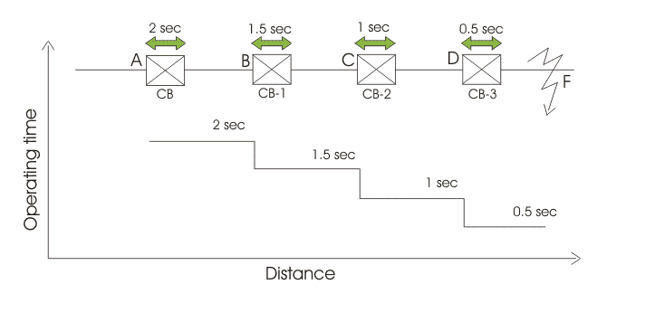
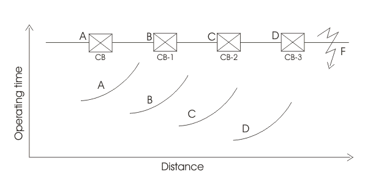
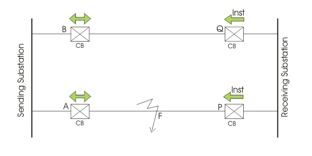
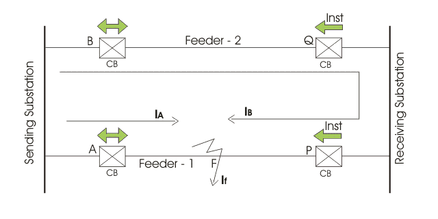
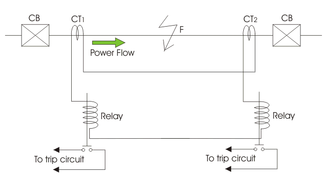

Protection of Radial Feeder
Line Protection by Definite Time Relay
Advantages of Definite Time Line Protection
Disadvantages of Definite Time Line Protection
Over Current Line Protection by Inverse Relay
Over Current Protection of Parallel Feeders
Differential Pilot Wire Protection
Merz Price Balance System
As the length of electrical power transmission line is generally long enough and it runs through open atmosphere, the probability of occurring fault in electrical power transmission line is much higher than that of electrical power transformers and alternators. That is why a transmission line requires much more protective schemes than a transformer and an alternator.
Protection of line should have some special features, such as-
- During fault, the only circuit breaker closest to the fault point should be tripped.
- If the circuit breaker closest the faulty point, fails to trip the circuit breaker just next to this breaker will trip as back up.
- The operating time of relay associated with protection of line should be as minimum as possible in order to prevent unnecessary tripping of circuit breakers associated with other healthy parts of power system.
These above mentioned requirements cause protection of transmission line much different from protection of transformer and other equipment of power systems. The main three methods of transmission line protection are -
- Time graded over electric current protection.
- Differential protection.
- Distance protection.
Time Graded Over Current Protection
This may also be referred simply as over-current protection of electrical power transmission line. Let' discuss different schemes of time graded over electric current protection.
Protection of Radial Feeder
In radial feeder, the power flows in one direction only, that is from source to load. This type of feeders can easily protected by using either definite time relays or inverse time relays.
Line Protection by Definite Time Relay
This protection scheme is very simple. Here total line is divided into different sections and each section is provided with definite time relay. The relay nearest to the end of the line has minimum time setting while time setting of other relays successively increased, towards the source.
For example, suppose there is a source at point A, in the figure below

At point D the circuit breaker CB-3 is installed with definite time of relay operation 0.5 sec. Successively, at point C an other circuit breaker CB-2 is installed with definite time of relay operation 1 sec. The next circuit breaker CB-1 is installed at point B which is nearest of the point A. At point B, the relay is set at time of operation 1.5 sec.
Now, assume a fault occurs at point F. Due to this fault, the faulty electric current flow through all the current transformers or CTs connected in the line. But as the time of operation of relay at point D is minimum the CB-3, associated with this relay will trip first to isolate the faulty zone from rest part of the line. In case due to any reason, CB-3 fails to trip, then next higher timed relay will operate the associated CB to trip. In this case, CB-2 will trip. If CB-2 also fails to trip, then next circuit breaker i.e. CB-1 will trip to isolate major portion of the line.
Advantages of Definite Time Line Protection
The main advantage of this scheme is simplicity. The second major advantage is, during fault, only nearest CB towards the source from fault point will operate to isolate the specific position of the line.
Disadvantage of Definite Time Line Protection
If the number of sections in the line is quite large, the time setting of relay nearest to the source, would be very long. So during any fault nearer to the source will take much time to be isolated. This may cause severe destructive effect on the system.
Over Current Line Protection by Inverse Relay
The drawback as we discussed just in definite time over electric current protection of transmission line, can easily be overcome by using inverse time relays. In inverse relay the time of operation is inversely proportional to fault current.

Protection by Inverse Relay" width="640" height="320" class="aligncenter size-full wp-image-11539">
In the above figure, overall time setting of relay at point D is minimum and successively this time setting is increased for the relays associated with the points towards the point A.
In case of any fault at point F will obviously trip CB-3 at point D. In failure of opening CB-3, CB-2 will be operated as overall time setting is higher in relay at point C.
Although, the time setting of relay nearest to the source is maximum but still it will trip in shorter period, if major fault occurs near the source, as the time of operation of relay is inversely proportional to faulty current.
Over Current Protection of Parallel Feeders
For maintaining stability of the system it is required to feed a load from source by two or more than two feeders in parallel. If fault occurs in any of the feeders, only that faulty feeder should be isolated from the system in order to maintain continuity of supply from source to load. This requirement makes the protection of parallel feeders little bit more complex than simple non direction over electric current protection of line as in the case of radial feeders. The protection of parallel feeder requires to use directional relays and to grade the time setting of relay for selective tripping.

There are two feeders connected in parallel from source to load. Both of the feeders have non-directional over electric current relay at source end. These relays should be inverse time relay. Also both of the feeders have directional relay or reverse power relay at their load end. The reverse power relays used here should be instantaneous type. That means these relays should be operated as soon as flow of power in the feeder is reversed. The normal direction of power from source to load.
Now, suppose a fault occurs at point F, say the fault electric current is If. This fault will get two parallel paths from source, one through circuit breaker A only and other via CB-B, feeder-2, CB-Q, load bus and CB-P. This is clearly shown in figure below, where IA and IB are electric current of fault shared by feeder-1 and feeder-2 respectively.

As per Kirchoff's electric current law, IA + IB = If.
Now, IA is flowing through CB-A, IB is flowing through CB-P. As the direction of flow of CB-P is reversed it will trip instantly. But CB-Q will not trip as flow of electric current (power) in this circuit breaker is not reversed. As soon as CB-P is tripped, the fault electric current IB stops flowing through feeder and hence there is no question of further operating of inverse time over electric current relay. IA still continues to flow even CB-P is tripped. Then because of over electric current IA, CB-A will trip. In this way the faulty feeder is isolated from system.
Differential Pilot Wire Protection
This is simply a differential protection scheme applied to feeders. Several differential schemes are applied for protection of line but Mess Price Voltage balance system and Translay Scheme are most popularly used.
Merz Price Balance System
The working principle of Merz Price Balance system is quite simple. In this scheme of line protection, identical CT is connected to each of the both ends of the line. The polarity of the CTs are same. The secondary of these electric current transformer and operating coil of two instantaneous relays are formed a closed loop as shown in the figure below. In the loop pilot wire is used to connect both CT secondary and both relay coil as shown.

Now, from the figure it is quite clear that when the system is under normal condition, there would not be any electric current flowing through the loop. As the secondary electric current of one CT will cancel out secondary electric current of other CT.
Now, if any fault occurs in the portion of the line between these two CTs, the secondary electric current of one CT will no longer equal and opposite of secondary electric current of other CT. Hence there would be a resultant circulating electric current in the loop.
Due this circulating current, the coil of both relays will close the trip circuit of associate circuit breaker. Hence, the faulty line will be isolated from both ends.
 by
by